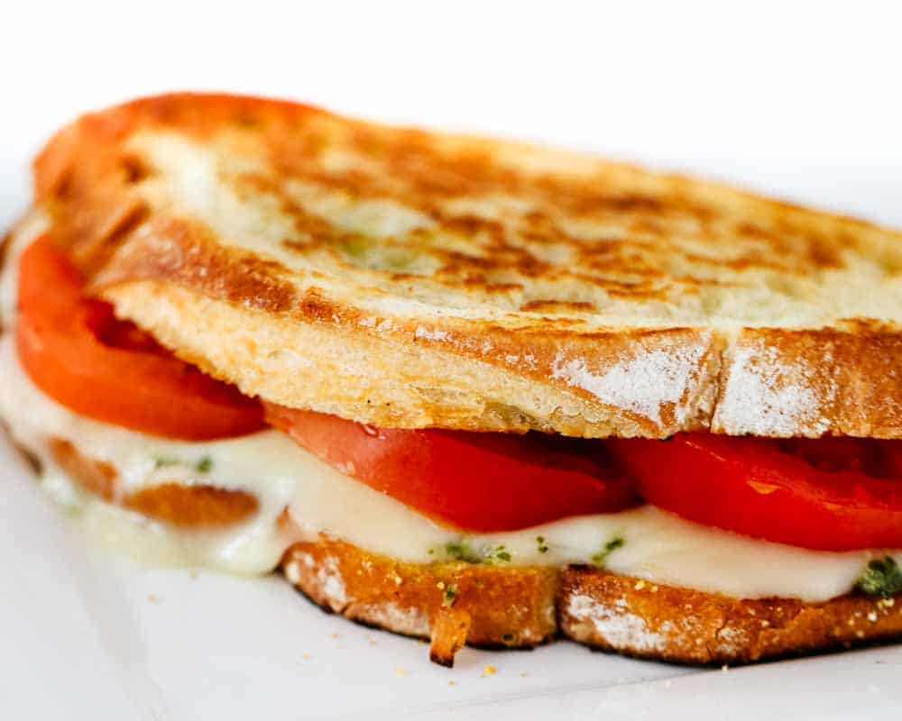

A yummy variation of a classic! With toasted bread and fresh basil and tomato, this mozzarella cheese based sandwich is perfect for a summer lunch!
Ingredients
- 1 (1 pound) loaf ciabatta bread, split in half horizontally
- 10 leaves fresh basil leaves, chopped
- 3 tomatoes, sliced
- 8 ounces fresh mozzarella cheese, sliced
Steps
- Preheat an oven to 400 degrees F (200 degrees C).
- Cut off the top of the head of garlic to expose the cloves, trimming about 1/4 inch off of the top of each clove. Drizzle the cut cloves with olive oil, then nestle the head into a piece of aluminum foil. Place in preheated oven and bake until the cloves are tender, about 35 minutes. Remove garlic from oven; do not turn oven off. Squeeze garlic from cloves into a small dish; mash into a paste.
- Spread the butter on the cut sides of the bread, sprinkle with rosemary, and place on a baking sheet. Toast bread in preheated oven for 5 minutes. Remove from oven and spread with garlic paste. Top one half of loaf with basil and tomatoes. Drizzle tomato slices with balsamic vinegar. Top remaining half of loaf with sliced mozzarella. Return sandwich halves to baking sheet.
- Place in hot oven and cook until the cheese has melted, about 10 minutes. Allow sandwich to cool slightly before assembling. Cut into 4 pieces to serve.